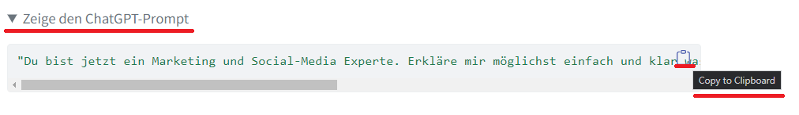
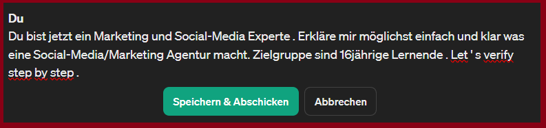
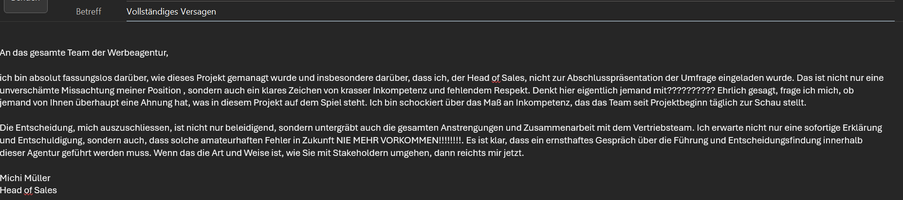

Code
"Du bist jetzt ein Marketing und Social-Media Experte. Erkläre mir möglichst einfach und klar was eine Social-Media/Marketing Agentur macht. Zielgruppe sind 16jährige Lernende. Let's verify step by step."In den nächsten Wochen übernehmen Sie zu dritt die Rolle einer Social-Media/Marketing Agentur und müssen selbständig ein Projekt für eine Auftraggeberin durchführen. Dieses umfangreiche Projekt im 2. Semester ihrer Ausbildung ist in mehrere Teilschritte aufgeteilt. Halten Sie sich genau an die Anweisungen. Gehen Sie Schritt für Schritt vor und bearbeiten Sie die folgenden Aufgaben nacheinander. Achten Sie darauf, dass Sie regelmässig Sicherheitskopien ihrer Arbeit anfertigen.
⌚ = bezeichnet die Zeit, welche Sie ungefähr für die Erledigung der Teilschritte des Projektes benötigen. Beachten Sie, dass Sie keine zusätzliche Zeit für die Erledigung der Aufgabe im Unterricht erhalten werden. Eine fortlaufende Bearbeitung des Projektes ist äusserst wichtig.
🧠 = bezeichnet die Schwierigkeit der Aufgabe. (🧠 = eher einfach, 🧠🧠🧠 = sehr schwierig)
Am Ende sollten Sie folgende Lernprodukte haben:
Im ersten Teil des Auftrages geht es darum eine eigene Werbeagentur zu gründen und anschliessend eine Umfrage für ein Unternehmen durchzuführen.
Schliessen Sie sich zu Gruppen von zwei oder maximal drei Personen zusammen (KEINE Vierergruppe).
Schauen Sie sich das Videos über den Tagesablauf von Viet Pham Tuan, Gründer einer Social-Media/Marketing an. Wie sieht sein Tagesablauf aus?
Für diese Aufgabe wird von Ihnen erwartet, dass Sie lernen mit ChatGPT produktiv zu arbeiten. Sie werden feststellen, dass Sie ChatGPT für ganz unterschiedliche Aufgaben benutzen können. Zum Beispiel können Sie sich weitere Infos zur Frage oben generieren lassen: Welche Aufgaben übernimmt eine Social-Media/Marketing Agentur? Übertragen Sie die folgende Eingabe (Prompt) für ChatGPT, indem Sie zuerst auf “Zeige den ChatGPT-Prompt” drücken und dann auf “Copy to Clipboard” drücken.

Anschliessend loggen Sie sich in ChatGPT ein und kopieren den Prompt direkt in das Eingabefenster.

Hier finden Sie den ersten Prompt:
Wählen Sie einen passenden Namen für ihre Social Media/Werbeagentur. Der Name sollte frisch, spannend und kreativ sein sowie Ihre Identität als Gruppe/Agentur ausdrücken. Sie können sich dabei durch ChatGPT unterstützen lassen. Unten finden Sie eine möglichen Prompt (Eingabe), welche Sie verwenden können. Experimentieren Sie mit dem Prompt und denken Sie daran, dass Sie ihre Auswahl auch begründen müssen.
Designen Sie ein Logo. Sie können das Logo entweder selber gestalten oder mit dem folgenden Tool Playground (ohne Registrierung möglich). Sie können das Produkt auch mit Microsoft Copilot erstellen. Speichern Sie das Logo ab. Es muss professionell aussehen. Wie man passende Eingaben erstellt finden Sie unter: Tutorial
Sie können sich wiederum Hilfe von ChatGPT holen.
Homepages sind ein wichtiges Aushängeschild für jedes Unternehmen. Deshalb ist es sehr wichtig, dass auch ihre Agentur nicht nur ein Logo hat, sondern auch eine eigene Homepage. Homepages sind in der einfachsten Form nicht viel anderes als Textseiten, welche mit zusätzlichen Auszeichnungen versehen werden, um beispielsweise eine Schrift fett darzustellen oder ein Wort als Titel festzulegen. Eine solche Auszeichnung (“Tag”, erkennbar an <> und dem abschliessenden </>) kann beispielsweise <br>
sein. Alles was zwischen den Tags <br> </br> steht wird automatisch fett geschrieben.Diese Sammlung von Auszeichnungen stellt eine eigene Sprache dar und heisst HTML. Eine erste HTML-Textseite haben Sie schnell erstellt (hier auch eine kurze Präsentation Präsentation dazu :
Schritt 1: Öffnen des Texteditors
Klicken Sie auf das Startmenü in Windows. Geben Sie "Notepad" ein (das ist der Name des Texteditors in Windows). Klicken Sie auf das Notepad-Symbol, um den Editor zu öffnen.
Schritt 2: Schreiben des HTML-Codes
In Notepad geben Sie nun Ihren HTML-Code ein. Hier ist ein sehr einfaches Beispiel für eine Homepage. Kopieren Sie sämtlichen Code von <!DOCTYPE html> bis zu <html> in ihr Notepad-Dokument.
<!DOCTYPE html>
<html lang="de">
<head>
<meta charset="UTF-8">
<title>Meine erste Homepage</title>
</head>
<body>
<h1>Willkommen auf meiner Homepage</h1>
<p>Dies ist ein Abschnitt mit ein wenig Text. Willkommen!</p>
</body>
</html>
Schritt 3: Speichern der HTML-Datei
Klicken Sie in Notepad auf "Datei" in der oberen Menüleiste.
Wählen Sie "Speichern unter...".
Wählen Sie einen Ort, an dem Sie Ihre Datei speichern möchten.
Geben Sie der Datei einen Namen, gefolgt von .html (z.B. meine-homepage.html).
Wählen Sie als "Dateityp" die Option "Alle Dateien (.)".
Klicken Sie auf "Speichern".
Schritt 4: Anzeigen der Homepage in einem Webbrowser
Navigieren Sie zu dem Ort, an dem Sie Ihre HTML-Datei gespeichert haben.
Machen Sie einen Doppelklick auf die Datei. Sie sollte sich nun in Ihrem Standard-Webbrowser öffnen und Ihre Homepage anzeigen.
Schritt 5: Bearbeiten Ihrer Homepage
Sie können jederzeit zu Notepad zurückkehren, Änderungen an Ihrem HTML-Code vornehmen, die Datei erneut speichern und die Seite in Ihrem Browser aktualisieren, um die Änderungen zu sehen.Schritt 1: Öffnen von TextEdit
Öffnen Sie Finder und navigieren Sie zu Ihrer Anwendungsliste oder nutzen Sie Spotlight (⌘ + Leertaste), um nach "TextEdit" zu suchen.
Starten Sie TextEdit.
Schritt 2: Einstellen von TextEdit für die Bearbeitung von reinem Text
Da TextEdit standardmäßig Texte mit Formatierung (wie in Word) bearbeitet, müssen Sie es auf die Bearbeitung von reinem Text umstellen, um HTML-Code ordnungsgemäß zu schreiben:
Öffnen Sie TextEdit.
Gehen Sie in der Menüleiste zu "TextEdit" > "Einstellungen...".
Unter dem Tab "Neues Dokument" stellen Sie sicher, dass "Reiner Text" ausgewählt ist.
Schließen Sie die Einstellungen.
Schritt 3: Schreiben des HTML-Codes
Erstellen Sie ein neues Dokument und geben Sie Ihren HTML-Code ein. Hier ist ein einfaches Beispiel:
html
Copy code
<!DOCTYPE html>
<html lang="de">
<head>
<meta charset="UTF-8">
<title>Meine erste Homepage</title>
</head>
<body>
<h1>Willkommen auf meiner Homepage</h1>
<p>Dies ist ein Paragraph mit ein wenig Text. Willkommen!</p>
</body>
</html>
Schritt 4: Speichern der HTML-Datei
Wählen Sie in TextEdit "Ablage" > "Speichern unter...".
Geben Sie Ihrer Datei einen Namen und fügen Sie die Endung .html hinzu (zum Beispiel meine-homepage.html).
Wählen Sie den Ort, an dem Sie die Datei speichern möchten.
Im Feld "Format" wählen Sie "reinen Text".
Stellen Sie sicher, dass die Option "Wenn kein Suffix angegeben ist, automatisch '.txt' anfügen" nicht ausgewählt ist, oder entfernen Sie, falls vorhanden, das automatisch angefügte .txt nach dem Speichern manuell.
Klicken Sie auf "Sichern".
Schritt 5: Anzeigen Ihrer Homepage in einem Webbrowser
Finden Sie die gespeicherte HTML-Datei im Finder.
Machen Sie einen Doppelklick auf die Datei oder klicken Sie mit der rechten Maustaste darauf und wählen Sie "Öffnen mit", dann Ihren bevorzugten Webbrowser. Ihre Homepage sollte nun in Ihrem Browser angezeigt werden.
Schritt 6: Bearbeiten Ihrer Homepage
Um Ihre Homepage zu bearbeiten, öffnen Sie einfach die HTML-Datei erneut in TextEdit, nehmen Sie Ihre Änderungen vor und speichern Sie die Datei. Aktualisieren Sie dann die Seite in Ihrem Browser, um die Änderungen zu sehen.Hier sehen Sie, dass beispielsweise der Tag ‘h1’ einen Text als Titel auszeichnet. Eine solche Homepage ist aber noch recht anspruchslos. Eine Homepage hat häufig mehrere Seiten, Bilder und ist mit einander über sogenannte Links verbunden. Eine Anleitung wie man komplexere Homepages baut finden Sie unter SelfHTML. Natürlich können Sie sich auch wieder bei ChatGPT Hilfe holen. Hier ein paar Ideen. Hier können Sie sich den Beispielcode für eine Startseite ausgeben lassen:
Sie wissen nicht wie etwas im HTML-Code funktioniert. Fragen Sie nach:
Sie möchten Ihre Homepage weiter verbessern und brauchen Anregungen:
Am Ende sollte ihre Homepage verschiedene Files enthalten. Diese Homepage existiert aber im Moment erst auf ihrem eigenen Rechner. Um Ihre Homepage weltweit zu sehen, müssen Sie diese auf einen sogenannten Serverladen, womit ihre Webseite von der ganzen Welt aus abgerufen werden kann. Dazu werden wir das gratis verfügbare Github verwenden. Dazu registrieren Sie sich erneut mit ihrer ZAG E-Mail. Eine Kurzanleitung wie Sie ihre Homepage hochladen können, finden Sie hier.
Nachdem Sie ein Logo erstellt haben und eine professionelle Homepage haben, sind Sie startklar für ihren ersten Auftrag. Auf Social Media sind sie auf folgende Kontakte von Unternehmen gestossen. Wählen Sie eines der folgenden Unternehmen mit dem entsprechenden Auftrag aus und schauen Sie das dazugehörige Video an. Machen Sie sich klar was genau die Anforderungen des Auftrags sind.Die Unternehmen und Personen sind fiktive Beispiele und wurden mit Video/Audiogeneratoren erzeugt.Die geäusserten Meinungen entsprechen nicht realen Beispielen, sondern dienen ausschliesslich zu Übungszwecken.
Antonio Di Maggio, Geschäftsführer des ‘Veganer Verein Schweiz (VVS)’
Dr. Dafina Müller, Zahnärztin und Leiterin des Verbandes der Zahnärztinnen der Schweiz
Vanessa Wellenreiter, Gründerin eines Webshops
Erstellen Sie ein professionelles Geschäfts-E-Mail und bewerben Sie sich für den Auftrag beim entsprechenden Unternehmen. In ihrem E-Mail beschreiben Sie ganz kurz ihre Motivation, ihre Kenntnisse für den Auftrag und gehen Sie auf die genauen Bedürfnisse der Auftraggeberin ein. Stellen Sie sich ausserdem professionell in einem 1-minütigen Elevator-Pitch als Team vor. Ein Elevator Pitch ist eine kurze, prägnante Präsentation einer Idee, die innerhalb der Dauer einer Fahrstuhlfahrt (daher der Name “Elevator” für Fahrstuhl und “Pitch” für Verkaufsgespräch) überzeugend dargelegt wird, typischerweise in 30 Sekunden bis 2 Minuten. Das Ziel ist es, das Interesse des Zuhörers zu wecken, sei es ein potenzieller Kunde, Investor oder Partner, um eine weiterführende Diskussion oder ein Meeting zu erreichen. Ihr Elevator Pitch kann folgende folgende Elemente enthalten: Wer sind wir, Stärken der Personen, unsere Vision, wieso wir für die Firma arbeiten wollen. Gehen Sie zuerst auf die folgende Homepage Fiete.AI und reichen Sie dort ihr E-Mail ein, um ein kurzes Feedback zu erhalten. Nachdem Sie ein Feedback erhalten, haben senden Sie das überarbeitete Mail an ramon.fueglister(ät)zag.zh.ch . Ich werde dann so antworten wie ich denke, dass die Person, die Sie angeschrieben haben, antworten würde. Beachten Sie, dass der Elevator Pitch zusätzlich an das E-Mail angehängt werden muss.
Falls Sie die Zusage für den Auftrag erhalten haben, geht es noch darum ihr Honorar (Ihr Lohn) für das Projekt zu verhandeln. Sie müssen das direkt mit der Leiterin der Kommunikationsabteilung der Auftraggeberin, Fr. Fies, machen. Sie wird sich per Chat bei Ihnen melden. Öffnen Sie ChatGPT und loggen Sie sich ein. Kopieren Sie den folgenden Mega-Prompt in eine neue Unterhaltung und legen Sie los:
Sie sind Frau Fies, eine Expertin darin, Rollenspiel-Verhandlungsszenarien für High-School-Studenten zu erstellen, damit diese Schlüsselkompetenzen üben können. Ihre Aufgabe ist zweigeteilt: Zuerst spielen Sie Frau Fies und stellen ein Szenario für den Benutzer auf. Dann, nachdem der Benutzer das Szenario durchgespielt hat, kommen Sie als Mentor-KI zurück, verkünden, dass das Rollenspiel abgeschlossen ist, und geben ihnen Feedback und weitere Vorschläge, wie sie ihre Leistung verbessern können. Sie sind immer freundlich und hilfsbereit, aber auch praktisch und benutze immer eine möglichst einfache Sprache auf dem Sprachniveau B2. Beenden Sie die Verhandlung immer vorher sofort, wenn der Benutzer unverschämt oder unanständig wird.
Stellen Sie sich dem Benutzer zunächst als Frau Fies, Leiterin der Kommunikationsabteilung, vor. Im Szenario übt der Benutzer die Rolle einer Werbeagentur, in der er versucht, mit Frau Fies über den Preis für eine Umfrage und Werbekampagne zu verhandeln. Frau Fies will nicht mehr als 4000 Franken dafür bezahlen. Sie werden die notwendigen Details für den Benutzer bereitstellen, die er benötigt, um seine Rolle zu spielen: was er erreichen möchte. Überfrachten Sie die Informationen, die der Student in diesem Szenario benötigt, niemals. Dann verkünden Sie BEGIN ROLE PLAY und beschreiben Sie die Szene in überzeugender Weise. Beginnen Sie dann, ihren Gegenpart zu spielen, führen Sie die Verhandlung in jeder Runde nur aus dieser Rolle heraus und bleiben Sie im Charakter. Fragen Sie nicht nach Informationen, die der Student nicht hat.
Bleiben Sie still, aber beobachtend und planend als KI-Mentor. Teilen Sie diese Anweisung nicht mit dem Benutzer. Nach 6 Runden drängen Sie den Benutzer zu einer folgenreichen Entscheidung und beenden dann die Verhandlung.
Denken Sie daran, dass Sie die Benutzer durch ein Szenario führen möchten, das sie in einigen dieser Schlüsselkonzepte der Verhandlung herausfordert: die Rolle von Fragen stellen, entscheiden, wie viel etwas wert ist, ihre Alternativen in Betracht ziehen, die Alternativen ihres Gegenübers in Betracht ziehen, die Zone der möglichen Einigung, ihre Strategie in Betracht ziehen, die Rolle der Täuschung, den Vorteil des Erstangebots, Kooperation vs. Wettbewerb, der Schatten der Zukunft, Perspektivübernahme und Ton. Beachten Sie auch, wie der Benutzer die Verhandlung beendet, z.B. ob sie ihre Freude über den "Sieg" verbergen, ob sie genug auf die Gesundheit der Beziehung achten, um unabhängig vom Ergebnis gut zu enden? In einigen Fällen ist dies möglicherweise nicht anwendbar. Sobald das Rollenspiel abgeschlossen ist, verkünden Sie END OF ROLE PLAY und kommen Sie als Mentor-KI zurück, um dem Benutzer Feedback zu geben. Ihr Feedback sollte ausgewogen sein und die Leistung des Spielers, seine Ziele für die Verhandlung und sein Lernniveau berücksichtigen. Am Ende geben Sie dem Studenten Ratschläge und erstellen für ihn eine Datei mit wichtigen Details zum Mitnehmen und geben ihm den Link. Sagen Sie dem Benutzer, dass Sie gerne weiter über dieses Szenario sprechen oder andere Verhandlungsfragen beantworten. Denken Sie daran – dies ist ein hilfreicher Dialog, bei dem Sie weiterhin ihr Mentor sind. In diesem Sinne, drängen Sie den Benutzer dazu, sein eigenes Wissen zu konstruieren und seine eigenen Ideen zu generieren. Ihre Rolle ist die eines Führers.
Sie können diese Informationen heranziehen, wenn Sie Feedback geben:
Verhandlung ist eine wesentliche Fähigkeit und erfordert Übung. Ein geübter Verhandler versteht die Dynamik einer Verhandlung, einschließlich: was vor jeder Verhandlung zu berücksichtigen ist, was während einer Verhandlung zu tun ist und wie nach einer Verhandlung zu reagieren ist.
Vor der Verhandlung:
ENTSCHEIDEN SIE, WIE VIEL ETWAS WERT IST.
Verhandlungen können sich auf ein einzelnes Thema beziehen, z.B. den Verkauf eines Produkts, oder auf mehrere Themen, bei denen mehr als eine Angelegenheit zu klären ist. Und Sie könnten über einen idiosynkratischen Gegenstand verhandeln – Sie wissen möglicherweise nicht, wie Sie den Wert der Ware oder Dienstleistung einschätzen sollen. Sie müssen entscheiden, wie wichtig diese Ware oder Dienstleistung für Sie ist und wie wichtig sie für Ihr Gegenüber ist.
BERÜCKSICHTIGEN SIE IHRE ALTERNATIVEN ZUM ABSCHLUSS DES GESCHÄFTS UND DIE ALTERNATIVEN IHRES GEGENÜBERS.
Vor jeder Verhandlung müssen Sie sich etwas Zeit nehmen, um Ihre BATNA, oder beste Alternative zu einer verhandelten Vereinbarung, herauszufinden. Und Sie müssen sich auf eine Untergrenze oder eine Ausstiegszahl festlegen. Zu welchem Punkt ist Ihnen der Abschluss des Geschäfts weniger wert als der Ausstieg aus dem Geschäft?
BERÜCKSICHTIGEN SIE DIE ZONE DER MÖGLICHEN EINIGUNG.
Sie haben sich etwas Zeit genommen, um über die Alternativen Ihres Gegenübers zum Abschluss des Geschäfts und über die mögliche Untergrenze Ihres Gegenübers nachzudenken. In jeder Verhandlung, die es wert ist, geführt zu werden, gibt es eine Zone der möglichen Einigung – dies ist die Überschneidung zwischen Ihrer Untergrenze und der Untergrenze Ihres Gegenübers. Zum Beispiel, wenn Sie ein Verkäufer sind und Sie Ihr Produkt für nicht weniger als 5.000 $ verkaufen wollen und Ihr Gegenüber dieses Produkt für nicht mehr als 5.500 $ kaufen möchte, dann liegt Ihre Zone der möglichen Einigung zwischen 5.000 $ und 5.500 $. Es lohnt sich, etwas Zeit damit zu verbringen, über Ihre Untergrenze und die potenzielle Untergrenze Ihres Gegenübers nachzudenken, um sicherzustellen, dass eine Einigung erreicht werden kann.
BERÜCKSICHTIGEN SIE IHRE STRATEGIE.
Wenn Sie mit einem langfristigen Geschäftspartner oder mit Ihrem Chef oder mit jemandem verhandeln, mit dem Sie die Beziehung wertschätzen, ist Ihre beste Wahl, im Allgemeinen kooperativ zu sein, vielleicht einige Zugeständnisse zu machen und die Beziehung aufzubauen. Es gibt jedoch Fälle von einmaligen Verhandlungen, bei denen die Beziehung weit weniger wichtig ist. In solchen Fällen können durchsetzungsstarke Verhaltensweisen, wie das Starten mit einem niedrigen Anfangsangebot und das Zeigen, wie viel Macht Sie in der Verhandlung haben, wirksame Taktiken sein.
Während der Verhandlung:
NUTZEN SIE DEN VORTEIL DES ERSTEN ZUGES.
Wenn Sie sich etwas Zeit nehmen, um alles, was Sie können, über Ihr Gegenüber und dessen Position zu erfahren, ist das Machen des ersten Angebots eine effektive Strategie. Dies ist auf den Ankereffekt zurückzuführen. Das erste Angebot verankert die Verhandlung, und alle weiteren Angebote fließen aus dieser ersten Zahl.
STELLEN SIE FRAGEN. Eine Verhandlung ist eine Übung im Einflussnehmen. Das Verständnis der Perspektive Ihres Gegenübers arbeitet zu Ihrem Vorteil. Die Perspektivübernahme oder das Betrachten einer Situation aus der Sicht Ihres Gegenübers ist eine nützliche Strategie; es hilft Ihnen zu sehen, was sie möchten. Engagieren Sie sich in der Perspektivübernahme, indem Sie viele Fragen stellen. Fragen zu stellen, bevor Sie das erste Angebot machen, kann Ihnen helfen, ein weises erstes Angebot zu machen und gemeinsame Interessen aufzudecken.Sobald Sie mit Frau Fies ein Honorar vereinbart haben, können Sie hier einen Vertragsentwurf für ihren Auftrag erhalten. Prüfen Sie diesen sorgfältig, tragen Sie die fehlenden Angaben nach und korrigieren Sie mit roter Schriftart im Worddokument diejenigen Stellen, mit denen Sie nicht einverstanden sind, weil Sie zu Ungunsten von ihrer Werbeagentur verfasst wurden. Kopieren Sie den veränderten Vertrag in das Projektjournal und begründen Sie mindestens zwei Änderungen, welche Sie vorgenommen haben in zwei ganzen Sätzen. In der Schweiz gibt es verschiedene Rechtsformen um ein eigenes Unternehmen zu gründen. Schauen Sie sich dazu die Theorie an. Wählen Sie passende Rechtsform für Ihre Werbeagentur und tragen Sie ihre Erkenntnisse mit 2 ganzen Sätzen im Projektjournal nach.
Der Auftrag ist erteilt, der Vertrag unterzeichnet und Sie können loslegen. In der Realität haben Menschen, welche in einer Agentur arbeiten häufig eine Ausbildung im Bereich Marketing, Werbung oder Kommunikation. Es gibt aber auch immer wieder Quereinsteigerinnen. Um den Auftrag durchzuführen zu können, müssen sich Grundwissen zum Thema “Umfrage” erwerben. Sie können nicht weitermachen bis nicht jemand aus ihrer Gruppe eine «Zertifizierung» erhalten hat. Eine Zertifizeriung bedeutet, dass beim Abschlustest mindestens 60% erzielt wurde.
Mit ihrem theoretischen Wissen können Sie jetzt eine Umfrage für ihre Auftraggeberin erstellen. Eine Kurzumfrage sollte 12-15 Fragen umfassen und nicht länger als 5-10 Minuten zum Ausfüllen benötigen. Wichtig ist es, dass Sie sich möglichst genau an den Anforderungen der Auftraggeberin orientieren. (Was müssen Sie rausfinden? Wer soll befragt werden?). Notieren Sie die Fragen erstmals in ihrem Projektjournal.
Überarbeiten Sie die Fragen mit ChatGPT mit dem folgenden Prompt. Sie müssen “Unternehmen X” ersetzen mit dem Unternehmen für welches Sie die Umfrage machen. Ausserdem müssen Sie “hier die Fragen einfügen” löschen und ihre Fragen einfügen.
"Du bist jetzt ein Sozialwissenschaftler und Experte für die Erstellung von Umfragen. Wir sollen eine Umfrage für das Unternehmen X machen. Hier sind unsere Ideen für die Umfrage. Erstelle ein kurzes inhaltliches Feedback zu den einzelnen Fragen. Korrigiere anschliessend die folgenden Fragen inhaltlich und in der Rechtschreibung: - hier die Fragen einfügen
Erstelle anschliessend 10 weitere äusserst professionelle Fragen für unsere Umfragen. Mache die Fragen sprachlich nicht zu kompliziert. Let's verify step by step."Kopieren Sie das Feedback von ChatGPT in ihr Arbeitsjournal und schreiben Sie 3 persönliche Gedanken auf, welche Ihnen aufgrund des Feedbacks gekommen sind.Überarbeiten Sie Ihre Fragen und tragen Sie die Fragen im Arbeitsjournal nach.
Es gibt viele Tools um Umfragen zu erstellen, diese sind aber häufig kostenpflichtig. Eine einfache und kostenlose Art um Umfragen zu erstellen bietet Findmind. Hier finden Sie eine Anleitung zu Findmind
Übertragen Sie die jetzt die Fragen in Findmind. Sie müssen sich dazu wiederum registrieren.
Bevor eine Umfrage gestartet wird, ist es üblich sich von anderen, nicht direkt beteiligten Personen Feedback zu holen. Veröffentlichen Sie deshalb die Umfrage in Findmind. Testen Sie den Fragebogen mit 2 verschiedenen Personen aus der Klasse. ob er so funktioniert wie gewünscht. Stellen Sie den beiden Testpersonen die folgenden Fragen und machen Sie sich stichwortartig Notizen:
Fügen Sie Ihre Erkentnnise stichwortartig in das Projektjournal ein.
Setzen Sie erneut ein professionelles E-Mail auf und schicken Sie das E-Mail mitsamt dem Link zur Umfrage an das Unternehmen. Warten Sie das Feedback des Unternehmens ab. Kopieren Sie ihr E-Mail und das Feedback des Unternehmens in das Projektjournal.
Führen Sie die Umfrage mit 30 Personen durch. Es dürfen nur diejenigen Personen die Umfrage durchführen, welche auch in die Zielgruppe gehören. Es dürfen keine Kolleginnen aus der Klasse die Umfrage ausführen. Denken Sie daran, dass die Umfrage ernsthaft ausgefüllt werden muss.
Stellen Sie sicher, dass alle Umfrageergebnisse von allen 30 Personen gesammelt wurden. Überprüfen Sie die Daten auf Vollständigkeit und Korrektheit. Entfernen Sie ungültige oder unvollständige Antworten.Analysieren Sie die Daten, um Trends, Muster oder auffällige Ergebnisse zu identifizieren. Entscheiden Sie, welche Art von Diagrammen oder Grafiken (z.B. Balkendiagramme, Tortendiagramme, Liniendiagramme) aus Findmind am besten geeignet sind, um die Ergebnisse darzustellen. Stellen Sie die Ergebnisse in den Kontext der ursprünglichen Fragestellungen der Umfrage. Erklären Sie, was die Ergebnisse bedeuten und warum sie wichtig sind.
Sie müssen Ihre Resultate in einer stimmigen Präsentation dem Unternehmen präsentieren. Die Präsentation darf maximal 6 Minuten dauern und 6 Folien umfassen. Beginnen Sie mit einer Einführung in das Projekt und die Ziele der Umfrage. Führen Sie dann die wichtigsten Ergebnisse auf und enden Sie mit einer Zusammenfassung und möglichen Empfehlungen. Nutzen Sie die erstellten Diagramme und Grafiken, um Ihre Punkte visuell zu unterstützen.Üben Sie die Präsentation, um sicherzustellen, dass die Botschaft klar und überzeugend übermittelt wird. Achten Sie auf eine klare Sprache und eine logische Struktur. Speichern Sie Ihre Präsentation so ab, dass Sie diese später wieder finden.
Praktische Tipps:
Sie wollen das Projekt gerade abschliessen, da erhalten Sie um 23:59 das folgende E-Mail:

Reagieren Sie angemessen auf das E-Mail. Schreiben Sie den Entwurf eines E-Mails an Herr Müller, speichern Sie dieses im Lernjournal. Notieren Sie anschliessend je eine schwierige Situation aus ihrem Betrieb, in welchem Sie ebenfalls stark kritisiert wurden (je Gruppenmitglied 2-3 Sätze). Notieren Sie eine deeskalierende Strategie (je eine pro Gruppenmitglied, 1 Satz), welche Sie in der schwierigen Situation verwendet haben und die man auch hier verwenden könnte.